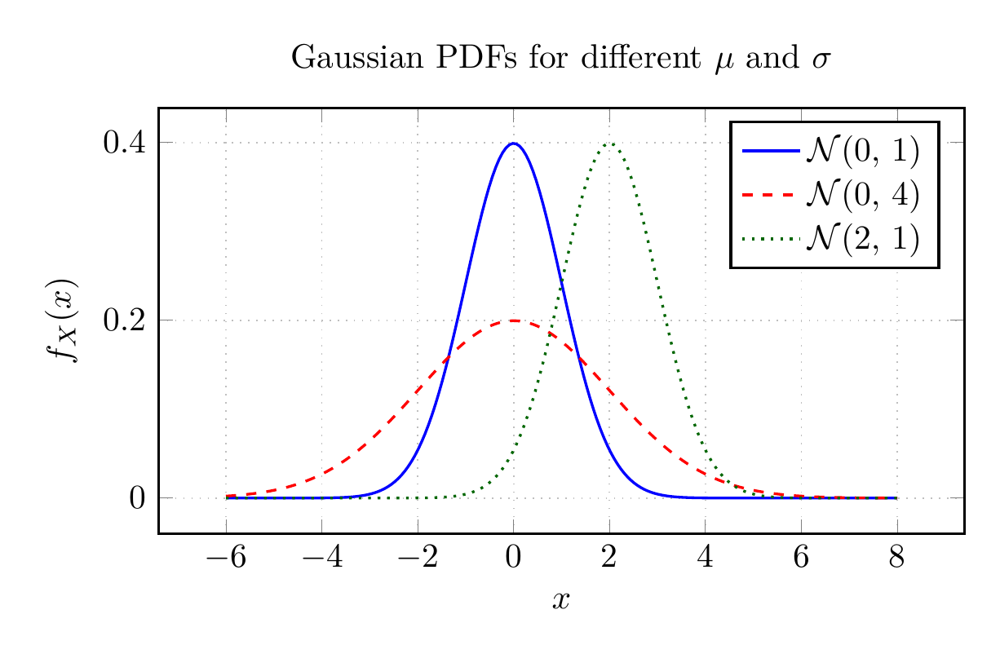
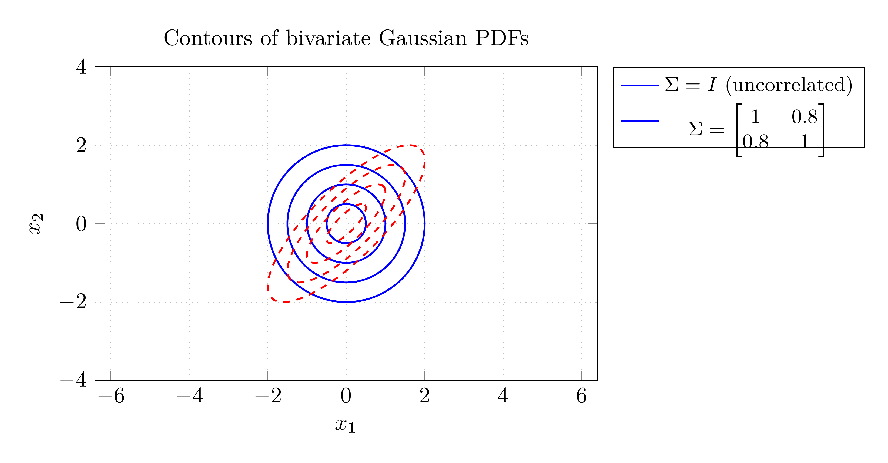

Modern control systems — from Kalman filters and Linear Quadratic Gaussian (LQG) regulators to stochastic MPC and Reinforcement Learning (RL) — are built on probability theory. This appendix introduces the core ideas from scratch, assuming only basic school-level mathematics. Every concept is illustrated with worked examples and MATLAB code so that you can develop intuition interactively before encountering these tools in the main text.
By the end of this appendix you should be comfortable with random variables, Gaussian distributions, expectations, covariance matrices, Bayes’ theorem, and stochastic processes — the exact toolkit needed for Chapters on Kalman filtering, LQG, stochastic MPC, and RL.
Every real control system operates in an uncertain environment. Sensors do not report exact values — they add noise. Actuators do not deliver exactly the commanded force or voltage. The plant model is always an approximation of reality. Disturbances (wind, load changes, temperature) are not known in advance.
Deterministic control (classical PID, standard MPC) ignores this uncertainty or handles it implicitly through robustness margins. Probabilistic control treats uncertainty explicitly by modelling unknown quantities as random variables and designing controllers that perform well on average or with guaranteed probability. The four main applications you will encounter in these notes are:
Kalman filter: optimal state estimator when process and measurement noise are Gaussian.
LQG control: combines a Kalman filter with an LQR controller to minimise expected quadratic cost under Gaussian noise.
Stochastic MPC: replaces hard constraints with chance constraints (e.g. satisfy a comfort bound with probability 0.95).
Reinforcement Learning: the agent observes noisy states and learns an optimal policy by maximising expected cumulative reward.
Sample Space and Event The sample space \(\Omega\) is the set of all possible outcomes of a random experiment. An event \(A\) is any subset \(A \subseteq \Omega\). The probability of event \(A\), written \(P(A)\), is a number in \([0,1]\) that quantifies how likely \(A\) is to occur.
The three axioms of probability (Kolmogorov, 1933):
\(P(A) \geq 0\) for every event \(A\).
\(P(\Omega) = 1\) (something always happens).
If \(A\) and \(B\) are mutually exclusive (\(A \cap B = \emptyset\)), then \(P(A \cup B) = P(A) + P(B)\).
From these three axioms every other rule of probability can be derived. Key consequences:
\(P(\emptyset) = 0\)
\(P(A^c) = 1 - P(A)\), where \(A^c\) is the complement of \(A\)
\(P(A \cup B) = P(A) + P(B) - P(A \cap B)\) (inclusion–exclusion)
\(0 \leq P(A) \leq 1\)
Sensor failure probability A temperature sensor fails independently on any given day with probability \(p = 0.02\). Over a 5-day week, what is the probability that it fails at least once?
Let \(A_i\) be the event “fails on day \(i\)”. The complement is “never fails in 5 days”: \[P(\text{never fails}) = (1-0.02)^5 = 0.98^5 \approx 0.904.\] Therefore: \[P(\text{at least one failure}) = 1 - 0.904 = 0.096.\] There is roughly a 9.6% chance of at least one failure per week.
p_fail = 0.02;
n_days = 5;
p_none = (1 - p_fail)^n_days % 0.9039
p_atleast1 = 1 - p_none % 0.0961p_fail = 0.02
n_days = 5
p_none = (1 - p_fail)**n_days
p_atleast1 = 1 - p_none
print(f"P(no failure in {n_days} days) = {p_none:.4f}")
print(f"P(at least 1 failure) = {p_atleast1:.4f}")Conditional Probability The conditional probability of event \(A\) given that event \(B\) has occurred (with \(P(B) > 0\)) is: \[P(A \mid B) = \frac{P(A \cap B)}{P(B)}.\] Intuitively, conditioning on \(B\) restricts the sample space to \(B\) and rescales probabilities accordingly.
Statistical Independence Events \(A\) and \(B\) are independent if knowing \(B\) occurred gives no information about \(A\): \[P(A \mid B) = P(A) \quad \Longleftrightarrow \quad P(A \cap B) = P(A)\,P(B).\] In Kalman filtering, process noise and measurement noise are assumed to be mutually independent, which greatly simplifies the filter equations.
Conditional probability with a noisy sensor A room is occupied 70% of the time. When occupied, a motion sensor triggers with probability 0.9. When empty, it still triggers (false alarm) with probability 0.05. Given that the sensor triggered, what is the probability the room is actually occupied?
Let \(O\) = “room occupied”, \(T\) = “sensor triggered”. \[P(O) = 0.7,\quad P(T \mid O) = 0.9,\quad P(T \mid O^c) = 0.05.\] By the law of total probability: \[P(T) = P(T\mid O)P(O) + P(T\mid O^c)P(O^c) = 0.9\times0.7 + 0.05\times0.3 = 0.645.\] By conditional probability: \[P(O\mid T) = \frac{P(T\mid O)\,P(O)}{P(T)} = \frac{0.63}{0.645} \approx 0.977.\] If the sensor triggers, the room is occupied with about 97.7% confidence.
P_O = 0.7;
P_T_O = 0.9; % true positive rate
P_T_Oc= 0.05; % false alarm rate
P_Oc = 1 - P_O;
P_T = P_T_O*P_O + P_T_Oc*P_Oc; % 0.6450
P_O_T = P_T_O * P_O / P_T % 0.9767P_O = 0.7 # P(obstacle present)
P_T_O = 0.9 # true positive rate
P_T_Oc = 0.05 # false alarm rate
P_T = P_T_O * P_O + P_T_Oc * (1 - P_O)
P_O_T = P_T_O * P_O / P_T
print(f"P(trigger) = {P_T:.4f}")
print(f"P(obstacle | trigger) = {P_O_T:.4f}")Bayes’ Theorem For events \(A\) and \(B\) with \(P(B) > 0\): \[{P(A \mid B) = \frac{P(B \mid A)\,P(A)}{P(B)}}.\] In words: the posterior probability of \(A\) given evidence \(B\) equals the likelihood \(P(B\mid A)\) times the prior \(P(A)\), divided by the marginal likelihood (evidence) \(P(B)\).
Bayes’ theorem is the mathematical foundation of the Kalman filter. At every time step the filter:
Uses the prior state estimate (before the measurement).
Updates it with the likelihood of the new measurement.
Produces a posterior estimate that combines both sources of information optimally.
This three-step pattern — prior \(\to\) likelihood \(\to\) posterior — repeats at every time step and is precisely the predict–correct structure of the Kalman filter described in the main text.
Bayes’ theorem and the Kalman filter The Kalman filter is the exact, closed-form solution to Bayes’ theorem when all distributions are Gaussian and the system is linear. For non-linear or non-Gaussian systems, approximate methods (Extended Kalman Filter, Unscented Kalman Filter, Particle Filter) are needed — all of which still implement the same Bayesian predict–correct cycle.
Random Variable A random variable (RV) \(X\) is a function that assigns a numerical value to every outcome in the sample space \(\Omega\). It is discrete if it takes countably many values and continuous if it takes values in a continuous range.
A discrete RV is characterised by its probability mass function (PMF): \[p_X(x) = P(X = x), \qquad \sum_{\text{all }x} p_X(x) = 1.\]
PMF of a discrete sensor reading A quantised position sensor reports integer values in \(\{-2,-1,0,1,2\}\) with equal probability. Plot the PMF.
\(p_X(x) = 1/5\) for each \(x \in \{-2,-1,0,1,2\}\), zero elsewhere (a uniform discrete distribution).
x = -2:2;
pmf = ones(1,5) / 5;
figure;
stem(x, pmf, 'filled', 'LineWidth', 1.5);
xlabel('Sensor reading x');
ylabel('P(X = x)');
title('PMF of quantised sensor');
ylim([0, 0.4]); grid on;import matplotlib.pyplot as plt
x = np.arange(-2, 3) # ← Try changing range
pmf = np.ones(5) / 5
fig, ax = plt.subplots(figsize=(6, 3))
markerline, stemlines, baseline = ax.stem(x, pmf)
plt.setp(stemlines, color='#5B9BD5', linewidth=2)
plt.setp(markerline, color='#5B9BD5', markersize=8)
plt.setp(baseline, color='#555')
ax.set_xlabel('Sensor reading x')
ax.set_ylabel('P(X = x)')
ax.set_title('PMF of quantised sensor')
ax.set_ylim([0, 0.4])
ax.grid(True, alpha=0.3)
plt.tight_layout()
plt.close(fig)
print("PMF values:", dict(zip(x, pmf)))A continuous RV is characterised by its probability density function (PDF) \(f_X(x)\), defined so that: \[P(a \leq X \leq b) = \int_a^b f_X(x)\,\mathrm{d}x, \qquad \int_{-\infty}^{\infty} f_X(x)\,\mathrm{d}x = 1.\]
PDF values are NOT probabilities \(f_X(x)\) can exceed 1. Only areas under the PDF curve represent probabilities. \(P(X = x) = 0\) for any single point \(x\) (a continuous RV never takes an exact value).
The cumulative distribution function (CDF) collects probability up to \(x\): \[F_X(x) = P(X \leq x) = \int_{-\infty}^{x} f_X(t)\,\mathrm{d}t.\]
Uniform Distribution \(\mathcal{U}(a,b)\) \(X \sim \mathcal{U}(a,b)\) has constant density on \([a,b]\): \[f_X(x) = \frac{1}{b-a}, \quad a \leq x \leq b;\qquad f_X(x) = 0 \text{ otherwise.}\] Mean: \((a+b)/2\).Variance: \((b-a)^2/12\).
The Gaussian distribution is the most important distribution in control engineering. Its central role follows from the Central Limit Theorem: the sum of many independent random variables tends to a Gaussian, regardless of their individual distributions. Sensor noise, modelling errors, and thermal fluctuations are all well approximated as Gaussian.
Gaussian Distribution \(\mathcal{N}(\mu, \sigma^2)\) A scalar RV \(X \sim \mathcal{N}(\mu, \sigma^2)\) has PDF: \[f_X(x) = \frac{1}{\sqrt{2\pi\sigma^2}} \exp\!\left(-\frac{(x-\mu)^2}{2\sigma^2}\right), \quad x \in \mathbb{R},\] where \(\mu\) is the mean (centre) and \(\sigma^2\) is the variance (spread). The standard deviation is \(\sigma = \sqrt{\sigma^2}\).

The 68–95–99.7 rule (essential for engineering): \[P(\mu - \sigma \leq X \leq \mu + \sigma) \approx 0.683,\quad P(\mu - 2\sigma \leq X \leq \mu + 2\sigma) \approx 0.954,\quad P(\mu - 3\sigma \leq X \leq \mu + 3\sigma) \approx 0.997.\]
Gaussian sensor noise in MATLAB A temperature sensor measures a true value of \(20\,^\circ\)C with additive Gaussian noise of standard deviation \(\sigma = 0.5\,^\circ\)C. Simulate 10 000 measurements and verify the 68–95–99.7 rule.
mu = 20;
sigma = 0.5;
N = 10000;
rng(42); % fix random seed for reproducibility
meas = mu + sigma * randn(1, N);
% Verify 68-95-99.7 rule
in1sig = mean(abs(meas - mu) <= 1*sigma) % ~0.683
in2sig = mean(abs(meas - mu) <= 2*sigma) % ~0.954
in3sig = mean(abs(meas - mu) <= 3*sigma) % ~0.997
% Plot histogram vs true PDF
figure;
histogram(meas, 60, 'Normalization', 'pdf', ...
'FaceColor', [0.6 0.8 1], 'EdgeColor', 'none');
hold on;
x_range = linspace(17, 23, 300);
pdf_true = normpdf(x_range, mu, sigma);
plot(x_range, pdf_true, 'r-', 'LineWidth', 2);
xlabel('Measurement (deg C)');
ylabel('Probability density');
title('Simulated Gaussian sensor noise');
legend('Histogram','True PDF'); grid on;import matplotlib.pyplot as plt
from scipy.stats import norm as normal_dist
mu, sigma = 20, 0.5 # ← Try changing these
N = 10000
np.random.seed(42)
meas = mu + sigma * np.random.randn(N)
fig, ax = plt.subplots(figsize=(7, 4))
ax.hist(meas, bins=60, density=True, alpha=0.7, color='#5B9BD5', edgecolor='none', label='Histogram')
x_range = np.linspace(mu - 4*sigma, mu + 4*sigma, 300)
ax.plot(x_range, normal_dist.pdf(x_range, mu, sigma), color='#E74C3C', lw=2, label='True PDF')
# Sigma bands
for k, (col, alp) in enumerate([(('#FFD700', 0.15)), ('#FFA500', 0.10), ('#FF6347', 0.06)], 1):
ax.axvspan(mu - k*sigma, mu + k*sigma, alpha=alp, color=col, label=f'±{k}σ')
ax.set_xlabel('Measurement (°C)')
ax.set_ylabel('Probability density')
ax.set_title(f'Gaussian Sensor Noise: μ={mu}, σ={sigma}')
ax.legend(fontsize=8, loc='upper right')
ax.grid(True, alpha=0.3)
plt.tight_layout()
plt.close(fig)
# Print 68-95-99.7 verification
for k in [1, 2, 3]:
frac = np.mean(np.abs(meas - mu) <= k*sigma)
print(f"Within {k}σ: {frac:.4f} (theory: {normal_dist.cdf(k) - normal_dist.cdf(-k):.4f})")Running the code confirms all three percentages to within 1% of their theoretical values. normpdf(x,mu,sigma) evaluates the Gaussian PDF; normcdf evaluates the CDF.
| Distribution | PDF / PMF | Mean | Variance |
|---|---|---|---|
| Uniform \(\mathcal{U}(a,b)\) | \(\tfrac{1}{b-a}\) | \(\tfrac{a+b}{2}\) | \(\tfrac{(b-a)^2}{12}\) |
| Gaussian \(\mathcal{N}(\mu,\sigma^2)\) | \(\tfrac{1}{\sqrt{2\pi\sigma^2}}e^{-(x-\mu)^2/2\sigma^2}\) | \(\mu\) | \(\sigma^2\) |
| Exponential \(\mathrm{Exp}(\lambda)\) | \(\lambda e^{-\lambda x}\), \(x\geq0\) | \(1/\lambda\) | \(1/\lambda^2\) |
| Bernoulli \(\mathrm{Bern}(p)\) | \(p^x(1-p)^{1-x}\), \(x\in\{0,1\}\) | \(p\) | \(p(1-p)\) |
| Poisson \(\mathrm{Poi}(\lambda)\) | \(e^{-\lambda}\lambda^k/k!\), \(k=0,1,\ldots\) | \(\lambda\) | \(\lambda\) |
Expected Value (Mean) The expected value (or mean) of a random variable \(X\) is its probability-weighted average: \[\mu = \mathbb{E}[X] = \begin{cases} \displaystyle\sum_x x\,p_X(x) & \text{(discrete)}, \\[6pt] \displaystyle\int_{-\infty}^{\infty} x\,f_X(x)\,\mathrm{d}x & \text{(continuous)}. \end{cases}\]
Variance and Standard Deviation The variance measures the average squared deviation from the mean: \[\sigma^2 = \mathrm{Var}(X) = \mathbb{E}\!\left[(X-\mu)^2\right] = \mathbb{E}[X^2] - \mu^2.\] The standard deviation \(\sigma = \sqrt{\mathrm{Var}(X)}\) has the same units as \(X\) and is the most intuitive measure of spread.
Linearity of expectation (always true, regardless of dependence): \[\mathbb{E}[aX + bY + c] = a\,\mathbb{E}[X] + b\,\mathbb{E}[Y] + c.\]
Variance under linear transformation: \[\mathrm{Var}(aX + b) = a^2\,\mathrm{Var}(X).\]
Mean and variance of measurement noise The measurement noise in a Kalman filter is modelled as \(v_k \sim \mathcal{N}(0, R)\) with \(R = 0.25\). What fraction of measurements lie within \(\pm 1\,^\circ\)C of the true value?
\(\sigma = \sqrt{0.25} = 0.5\). We need \(P(-1 \leq v_k \leq 1) = P(-2\sigma \leq v_k \leq 2\sigma) \approx 0.954\).
R = 0.25;
sigma = sqrt(R); % 0.5
% Probability within +/- 1 degree
prob = normcdf(1, 0, sigma) - normcdf(-1, 0, sigma) % 0.9545
% Alternatively, using the standard normal
z = 1 / sigma; % 2 standard deviations
prob2 = 2*normcdf(z) - 1 % 0.9545
% Mean and variance via Monte Carlo
v = sigma * randn(1, 1e6);
fprintf('Sample mean: %.4f\n', mean(v)) % ~0
fprintf('Sample variance: %.4f\n', var(v)) % ~0.25R = 0.25
sigma = np.sqrt(R)
prob = normal_dist.cdf(1, 0, sigma) - normal_dist.cdf(-1, 0, sigma)
print(f"P(|error| <= 1 deg) = {prob:.4f}")
z = 1 / sigma
prob2 = 2 * normal_dist.cdf(z) - 1
print(f"Via z-score (z={z:.1f}): {prob2:.4f}")
# Monte Carlo
v = sigma * np.random.randn(1_000_000)
print(f"\nMonte Carlo (N=10^6):")
print(f" Sample mean: {np.mean(v):.4f}")
print(f" Sample variance: {np.var(v):.4f} (true: {R})")Covariance The covariance of two random variables \(X\) and \(Y\) measures how they vary together: \[\mathrm{Cov}(X,Y) = \mathbb{E}\!\left[(X - \mathbb{E}[X]) (Y - \mathbb{E}[Y])\right] = \mathbb{E}[XY] - \mathbb{E}[X]\,\mathbb{E}[Y].\] Note that \(\mathrm{Cov}(X,X) = \mathrm{Var}(X)\). If \(X\) and \(Y\) are independent, \(\mathrm{Cov}(X,Y) = 0\) (but the converse is not generally true).
Pearson Correlation Coefficient The correlation coefficient normalises covariance to the range \([-1,1]\): \[\rho_{XY} = \frac{\mathrm{Cov}(X,Y)}{\sigma_X \sigma_Y}.\] \(\rho = 1\): perfect positive linear relationship; \(\rho = -1\): perfect negative; \(\rho = 0\): uncorrelated (no linear relationship).
Covariance and correlation in MATLAB
rng(0);
N = 1000;
x = randn(N,1);
y1 = 2*x + 0.5*randn(N,1); % highly correlated with x
y2 = randn(N,1); % independent of x
% Covariance matrices
C1 = cov(x, y1) % large off-diagonal entries
C2 = cov(x, y2) % near-zero off-diagonal
% Correlation coefficients
rho1 = corr(x, y1) % close to +1
rho2 = corr(x, y2) % close to 0
% Scatter plots
figure;
subplot(1,2,1); scatter(x, y1, 5, '.'); grid on;
xlabel('x'); ylabel('y_1'); title(sprintf('\\rho = %.2f', rho1));
subplot(1,2,2); scatter(x, y2, 5, 'r.'); grid on;
xlabel('x'); ylabel('y_2'); title(sprintf('\\rho = %.2f', rho2));import matplotlib.pyplot as plt
np.random.seed(0)
N = 1000 # ← Try changing
x = np.random.randn(N)
y1 = 2*x + 0.5*np.random.randn(N) # correlated
y2 = np.random.randn(N) # independent
rho1 = np.corrcoef(x, y1)[0, 1]
rho2 = np.corrcoef(x, y2)[0, 1]
fig, (ax1, ax2) = plt.subplots(1, 2, figsize=(8, 3.5))
ax1.scatter(x, y1, s=5, alpha=0.5, color='#5B9BD5')
ax1.set_xlabel('x'); ax1.set_ylabel('y₁')
ax1.set_title(f'ρ = {rho1:.3f}')
ax1.grid(True, alpha=0.3)
ax2.scatter(x, y2, s=5, alpha=0.5, color='#E74C3C')
ax2.set_xlabel('x'); ax2.set_ylabel('y₂')
ax2.set_title(f'ρ = {rho2:.3f}')
ax2.grid(True, alpha=0.3)
plt.tight_layout()
plt.close(fig)
print(f"Cov(x,y1):\n{np.cov(x, y1)}")
print(f"\nCov(x,y2):\n{np.cov(x, y2)}")State vectors in control systems are multi-dimensional. The Kalman filter propagates a full joint probability distribution over all state components simultaneously, which requires the multivariate generalisation of the Gaussian.
Multivariate Gaussian \(\mathcal{N}(\boldsymbol{\mu}, \Sigma)\) A random vector \(x \in \mathbb{R}^n\) follows a multivariate Gaussian distribution with mean vector \(\boldsymbol{\mu} \in \mathbb{R}^n\) and covariance matrix \(\Sigma \in \mathbb{R}^{n\times n}\) if its PDF is: \[f(x) = \frac{1}{(2\pi)^{n/2}\sqrt{\det(\Sigma)}} \exp\!\left(-\frac{1}{2} (x-\boldsymbol{\mu})^\top \Sigma^{-1} (x-\boldsymbol{\mu})\right).\] The covariance matrix \(\Sigma\) must be symmetric positive semi-definite: \(\Sigma = \Sigma^\top\) and \(\Sigma \succeq 0\).
The diagonal entries of \(\Sigma\) are the individual variances: \(\Sigma_{ii} = \mathrm{Var}(x_i)\). The off-diagonal entries are covariances: \(\Sigma_{ij} = \mathrm{Cov}(x_i, x_j)\).

Covariance matrices in the Kalman filter The Kalman filter maintains the state estimate as \(x_k \sim \mathcal{N}(\hat{x}_k, P_k)\), where \(P_k\) is the error covariance matrix. At each step:
Prediction: \(P\) grows (uncertainty increases because the model is imperfect).
Correction: \(P\) shrinks (the measurement reduces uncertainty).
The Kalman gain \(K\) is precisely the factor that balances how much to trust the model prediction versus the new measurement.
Multivariate Gaussian samples in MATLAB Generate samples from a bivariate Gaussian with \(\boldsymbol{\mu} = [1,\;-2]^\top\) and \(\Sigma = \begin{bmatrix} 2 & 0.8 \\ 0.8 & 1 \end{bmatrix}\).
mu = [1; -2];
Sigma = [2, 0.8; 0.8, 1];
% Check Sigma is positive definite
eig(Sigma) % both positive: [0.4781; 2.5219]
% Draw 2000 samples
rng(1);
N = 2000;
samples = mvnrnd(mu', Sigma, N); % N x 2 matrix
% Plot
figure;
scatter(samples(:,1), samples(:,2), 8, '.', ...
'MarkerEdgeColor', [0.2 0.4 0.8]);
hold on;
plot(mu(1), mu(2), 'r+', 'MarkerSize', 15, 'LineWidth', 2);
xlabel('x_1'); ylabel('x_2');
title('Samples from \mathcal{N}(\mu, \Sigma)');
legend('Samples','Mean'); grid on; axis equal;
% Verify sample statistics
fprintf('Sample mean: [%.3f, %.3f]\n', mean(samples));
disp('Sample covariance:'); disp(cov(samples))import matplotlib.pyplot as plt
mu = np.array([1, -2]) # ← Try changing
Sigma = np.array([[2, 0.8], [0.8, 1]]) # ← Try changing
np.random.seed(1)
samples = np.random.multivariate_normal(mu, Sigma, 2000)
fig, ax = plt.subplots(figsize=(6, 5))
ax.scatter(samples[:, 0], samples[:, 1], s=4, alpha=0.4, color='#5B9BD5', label='Samples')
ax.plot(mu[0], mu[1], 'r+', markersize=15, markeredgewidth=2, label='Mean')
# Confidence ellipses (1σ, 2σ, 3σ)
eigvals, eigvecs = np.linalg.eigh(Sigma)
angle = np.degrees(np.arctan2(eigvecs[1, 1], eigvecs[0, 1]))
for k, alpha in [(1, 0.5), (2, 0.3), (3, 0.15)]:
w, h = 2 * k * np.sqrt(eigvals)
ell = plt.matplotlib.patches.Ellipse(mu, w, h, angle=angle,
fill=False, edgecolor='#2ECC71', linewidth=1.5, alpha=alpha, linestyle='--')
ax.add_patch(ell)
ax.set_xlabel('x₁'); ax.set_ylabel('x₂')
ax.set_title(f'Samples from N(μ, Σ)')
ax.legend(fontsize=9)
ax.set_aspect('equal')
ax.grid(True, alpha=0.3)
plt.tight_layout()
plt.close(fig)
print(f"Sample mean: {np.mean(samples, axis=0)}")
print(f"True mean: {mu}")
print(f"\nSample covariance:\n{np.cov(samples.T)}")A crucial property that makes Gaussian distributions so convenient for control is that they are closed under linear transformations: a linear function of a Gaussian is still Gaussian.
Linear Transformation of a Gaussian Vector If \(x \sim \mathcal{N}(\boldsymbol{\mu}, \Sigma)\) and \(y = Ax + b\), then: \[y \sim \mathcal{N}\!\left( A\boldsymbol{\mu} + b,\; A\Sigma A^\top \right).\]
This is exactly the predict step of the Kalman filter. If the state \(x_k \sim \mathcal{N}(\hat{x}_k, P_k)\) and the system evolves as \(x_{k+1} = Ax_k + w_k\) with process noise \(w_k \sim \mathcal{N}(0, Q)\), then the predicted state distribution is: \[x_{k+1} \sim \mathcal{N}\!\left( A\hat{x}_k,\; A P_k A^\top + Q \right).\] No approximation is involved — the result is exact because all operations are linear and all distributions are Gaussian.
Propagating uncertainty through a linear system A one-dimensional system has \(x_{k+1} = 0.9\,x_k + w_k\) with \(w_k \sim \mathcal{N}(0, 0.01)\). The initial state is \(x_0 \sim \mathcal{N}(5, 1)\). Propagate the mean and variance for 10 steps.
At each step: \(\mu_{k+1} = 0.9\,\mu_k\) and \(\sigma^2_{k+1} = 0.81\,\sigma^2_k + 0.01\). The variance decays towards the steady-state value \(\sigma^2_\infty = 0.01/(1-0.81) \approx 0.053\).
a = 0.9;
Q = 0.01; % process noise variance
mu = 5;
P = 1; % initial variance
N = 10;
mu_log = zeros(1,N+1); P_log = zeros(1,N+1);
mu_log(1) = mu; P_log(1) = P;
for k = 1:N
mu = a * mu;
P = a^2 * P + Q;
mu_log(k+1) = mu;
P_log(k+1) = P;
end
figure;
subplot(2,1,1);
plot(0:N, mu_log, 'b-o', 'LineWidth', 1.5);
ylabel('\mu_k'); title('Propagated mean'); grid on;
subplot(2,1,2);
plot(0:N, P_log, 'r-o', 'LineWidth', 1.5);
yline(Q/(1-a^2), 'k--', 'Steady state', 'LineWidth', 1);
ylabel('\sigma^2_k'); xlabel('Step k');
title('Propagated variance'); grid on;import matplotlib.pyplot as plt
a, Q = 0.9, 0.01 # ← Try changing a and Q
mu_0, P_0 = 5.0, 1.0
N = 10
mu_log, P_log = [mu_0], [P_0]
mu, P = mu_0, P_0
for k in range(N):
mu = a * mu
P = a**2 * P + Q
mu_log.append(mu)
P_log.append(P)
P_ss = Q / (1 - a**2)
ks = np.arange(N + 1)
fig, (ax1, ax2) = plt.subplots(2, 1, figsize=(7, 5), sharex=True)
ax1.plot(ks, mu_log, 'o-', color='#5B9BD5', lw=1.5, markersize=5)
ax1.set_ylabel('μₖ')
ax1.set_title('Propagated mean')
ax1.grid(True, alpha=0.3)
ax2.plot(ks, P_log, 'o-', color='#E74C3C', lw=1.5, markersize=5)
ax2.axhline(P_ss, color='#FFD700', ls='--', lw=1.5, label=f'Steady state = {P_ss:.4f}')
ax2.set_xlabel('Step k')
ax2.set_ylabel('σ²ₖ')
ax2.set_title('Propagated variance')
ax2.legend(fontsize=9)
ax2.grid(True, alpha=0.3)
plt.tight_layout()
plt.close(fig)
print(f"Steady-state variance: {P_ss:.6f}")A stochastic process is a sequence of random variables indexed by time: \(\{X_k\}_{k=0}^{\infty}\) (discrete time) or \(\{X(t)\}_{t\geq0}\) (continuous time). In control, the key stochastic processes are:
White noise: uncorrelated sequence where each sample is drawn independently from the same distribution. Used to model process noise \(w_k\) and measurement noise \(v_k\) in state-space models.
Random walk: \(X_{k+1} = X_k + w_k\) where \(w_k\) is white noise. The variance grows without bound.
Markov process: the future depends only on the present state, not the past. State-space models are (first-order) Markov by construction: \(x_{k+1} = f(x_k, u_k, w_k)\).
White Noise Assumptions in State-Space Control The standard Kalman filter assumptions are: \[\begin{align*} w_k &\sim \mathcal{N}(0, Q), \quad \text{(process noise)} \\ v_k &\sim \mathcal{N}(0, R), \quad \text{(measurement noise)} \\ \mathbb{E}[w_k w_j^\top] &= Q\,\delta_{kj}, \quad \text{(uncorrelated across time)} \\ \mathbb{E}[v_k v_j^\top] &= R\,\delta_{kj}, \quad \mathbb{E}[w_k v_j^\top] &= 0, \end{align*}\] where \(\delta_{kj} = 1\) if \(k=j\), else \(0\) (Kronecker delta). Matrices \(Q \succeq 0\) and \(R \succ 0\) are the noise covariance matrices that appear explicitly in the Kalman filter equations.
Simulating white noise and a random walk
N = 200;
Q = 0.5; % process noise variance
rng(7);
w = sqrt(Q) * randn(1, N); % white noise sequence
% Verify whiteness: autocorrelation should be near zero for lag > 0
figure;
subplot(3,1,1);
plot(w); xlabel('k'); ylabel('w_k');
title('White noise sequence'); grid on;
subplot(3,1,2);
autocorr(w, 20); % should spike only at lag 0
title('Autocorrelation of white noise');
% Random walk: x_{k+1} = x_k + w_k
x = cumsum(w);
subplot(3,1,3);
plot(x, 'r'); xlabel('k'); ylabel('x_k');
title('Random walk (cumulative sum of white noise)'); grid on;import matplotlib.pyplot as plt
N, Q = 200, 0.5 # ← Try changing
np.random.seed(7)
w = np.sqrt(Q) * np.random.randn(N)
# Autocorrelation
max_lag = 20
acf = [1.0]
for lag in range(1, max_lag + 1):
acf.append(np.corrcoef(w[:-lag], w[lag:])[0, 1])
# Random walk
x = np.cumsum(w)
fig, (ax1, ax2, ax3) = plt.subplots(3, 1, figsize=(7, 7))
ax1.plot(w, color='#5B9BD5', lw=0.8)
ax1.set_xlabel('k'); ax1.set_ylabel('wₖ')
ax1.set_title('White noise sequence')
ax1.grid(True, alpha=0.3)
markerline, stemlines, baseline = ax2.stem(range(max_lag + 1), acf)
plt.setp(stemlines, color='#5B9BD5', linewidth=1.5)
plt.setp(markerline, color='#5B9BD5', markersize=5)
plt.setp(baseline, color='#555')
ax2.axhline(1.96/np.sqrt(N), color='#E74C3C', ls='--', alpha=0.5)
ax2.axhline(-1.96/np.sqrt(N), color='#E74C3C', ls='--', alpha=0.5)
ax2.set_xlabel('Lag'); ax2.set_ylabel('ACF')
ax2.set_title('Autocorrelation of white noise')
ax2.grid(True, alpha=0.3)
ax3.plot(x, color='#E74C3C', lw=1)
ax3.set_xlabel('k'); ax3.set_ylabel('xₖ')
ax3.set_title('Random walk (cumulative sum)')
ax3.grid(True, alpha=0.3)
plt.tight_layout()
plt.close(fig)
print(f"White noise — mean: {np.mean(w):.4f}, var: {np.var(w):.4f} (expect {Q})")The autocorrelation plot confirms that white noise has zero correlation at all non-zero lags (within statistical fluctuation). The random walk drifts unpredictably because its variance grows as \(k \cdot Q\).
These two theorems are the bedrock of statistical intuition.
Law of Large Numbers (LLN) Let \(X_1, X_2, \ldots, X_N\) be independent, identically distributed (i.i.d.) random variables with mean \(\mu\). The sample mean converges to the true mean as the sample size grows: \[\bar{X}_N = \frac{1}{N}\sum_{i=1}^N X_i \;\xrightarrow{\;N\to\infty\;}\; \mu.\]
Central Limit Theorem (CLT) Under the same conditions (i.i.d., finite variance \(\sigma^2\)), the standardised sample mean converges in distribution to a standard Gaussian: \[\frac{\bar{X}_N - \mu}{\sigma/\sqrt{N}} \;\xrightarrow{\;d\;}\; \mathcal{N}(0,1) \quad \text{as } N \to \infty.\] This is why Gaussian noise is such a universal model: it emerges naturally as the aggregate effect of many small, independent perturbations.
Demonstrating the CLT in MATLAB Show that the sample mean of \(N\) uniform random variables approaches a Gaussian as \(N\) increases.
n_trials = 5000;
figure;
for idx = 1:4
N = 10^idx; % N = 10, 100, 1000, 10000
% Sum N uniform[0,1] samples, then standardise
raw = rand(n_trials, N);
xbar = mean(raw, 2); % n_trials x 1 sample means
mu_u = 0.5; sig_u = 1/sqrt(12*N); % theoretical mean and std
z = (xbar - mu_u) / sig_u;
subplot(2,2,idx);
histogram(z, 40, 'Normalization','pdf', ...
'FaceColor',[0.6 0.8 1], 'EdgeColor','none');
hold on;
x_range = linspace(-4, 4, 200);
plot(x_range, normpdf(x_range), 'r-', 'LineWidth', 2);
title(sprintf('N = %d', N));
xlabel('z'); ylabel('PDF'); grid on;
xlim([-4 4]);
end
sgtitle('Central Limit Theorem: convergence to Gaussian');import matplotlib.pyplot as plt
from scipy.stats import norm as normal_dist
n_trials = 5000
np.random.seed(42)
z_range = np.linspace(-4, 4, 200)
fig, axes = plt.subplots(2, 2, figsize=(8, 6))
for idx, ax in enumerate(axes.flat):
N_val = 10**(idx + 1)
raw = np.random.rand(n_trials, N_val)
xbar = np.mean(raw, axis=1)
sig_u = 1 / np.sqrt(12 * N_val)
z = (xbar - 0.5) / sig_u
ax.hist(z, bins=40, density=True, alpha=0.7, color='#5B9BD5', edgecolor='none')
ax.plot(z_range, normal_dist.pdf(z_range), color='#E74C3C', lw=2)
ax.set_title(f'N = {N_val}')
ax.set_xlabel('z'); ax.set_ylabel('PDF')
ax.set_xlim([-4, 4])
ax.grid(True, alpha=0.3)
fig.suptitle('Central Limit Theorem: convergence to Gaussian', color='#D4E0ED', fontsize=12)
plt.tight_layout()
plt.close(fig)Even for \(N=10\) the histogram already resembles a bell curve. By \(N=1000\) the agreement with the standard Gaussian (red curve) is almost perfect.
Monte Carlo methods approximate expectations and probabilities by drawing many random samples. They are used in stochastic MPC to evaluate chance constraints (e.g. “what fraction of scenarios violate a temperature bound?”) and in RL to estimate policy value functions.
Monte Carlo Estimation To estimate \(\mathbb{E}[g(X)]\) for some function \(g\) and random variable \(X\):
Draw \(N\) i.i.d. samples \(x^{(1)}, x^{(2)}, \ldots, x^{(N)}\) from the distribution of \(X\).
Compute the sample average: \(\hat{\mathbb{E}}[g(X)] = \dfrac{1}{N}\sum_{i=1}^N g(x^{(i)})\).
By the LLN this estimate converges to the true expectation. The standard error of the estimate is \(\sigma_{g(X)}/\sqrt{N}\), so accuracy improves as \(1/\sqrt{N}\).
Monte Carlo chance constraint evaluation In a stochastic MPC application, room temperature at the next step is \(x_1 \sim \mathcal{N}(21.5,\; 0.04)\) (mean 21.5\(^\circ\)C, variance 0.04). Estimate the probability that the comfort constraint \(x_1 \geq 21\,^\circ\)C is satisfied.
mu_x = 21.5;
var_x = 0.04;
N = 100000;
rng(3);
x_samples = mu_x + sqrt(var_x) * randn(1, N);
% Monte Carlo probability estimate
p_mc = mean(x_samples >= 21) % ~0.9938
% Exact answer via CDF
p_exact = 1 - normcdf(21, mu_x, sqrt(var_x)) % 0.9938
fprintf('Monte Carlo: %.4f\n', p_mc);
fprintf('Exact: %.4f\n', p_exact);import matplotlib.pyplot as plt
from scipy.stats import norm as normal_dist
mu_x, var_x = 21.5, 0.04 # ← Try changing
N = 100000
np.random.seed(3)
x_samples = mu_x + np.sqrt(var_x) * np.random.randn(N)
constraint = 21.0 # ← Try changing
p_mc = np.mean(x_samples >= constraint)
p_exact = 1 - normal_dist.cdf(constraint, mu_x, np.sqrt(var_x))
fig, ax = plt.subplots(figsize=(7, 4))
ax.hist(x_samples, bins=80, density=True, alpha=0.7, color='#5B9BD5', edgecolor='none')
xr = np.linspace(mu_x - 4*np.sqrt(var_x), mu_x + 4*np.sqrt(var_x), 300)
ax.plot(xr, normal_dist.pdf(xr, mu_x, np.sqrt(var_x)), color='#2ECC71', lw=2)
ax.axvline(constraint, color='#E74C3C', lw=2, ls='--', label=f'Constraint x ≥ {constraint}')
ax.fill_between(xr[xr < constraint], normal_dist.pdf(xr[xr < constraint], mu_x, np.sqrt(var_x)),
alpha=0.3, color='#E74C3C', label=f'Violation: {1-p_mc:.4f}')
ax.set_xlabel('Temperature (°C)')
ax.set_ylabel('Probability density')
ax.set_title(f'Monte Carlo Chance Constraint: P(x ≥ {constraint}) = {p_mc:.4f}')
ax.legend(fontsize=9)
ax.grid(True, alpha=0.3)
plt.tight_layout()
plt.close(fig)
print(f"P(x >= {constraint}):")
print(f" Monte Carlo (N={N}): {p_mc:.4f}")
print(f" Exact (CDF): {p_exact:.4f}")Both methods give \(P(x_1 \geq 21) \approx 0.9938\), i.e. the comfort constraint is satisfied 99.4% of the time. In stochastic MPC this would be expressed as the chance constraint \(P(x_1 \geq 21) \geq 0.95\).
With the tools of this appendix, the Kalman filter equations can now be understood probabilistically rather than just algorithmically.
The state-space model is: \[\begin{align} {x}_{k+1} &= A{x}_k + B{u}_k + {w}_k, \qquad {w}_k \sim \mathcal{N}({0}, Q), \label{eq:ss1}\\ {y}_k &= C{x}_k + {v}_k, \qquad {v}_k \sim \mathcal{N}({0}, R). \label{eq:ss2} \end{align}\]
The Kalman filter maintains a Gaussian belief over the state: \[p({x}_k \mid {y}_{0:k}) = \mathcal{N}(\hat{{x}}_k, P_k).\]
Predict step (propagate using the system model): \[\begin{align} \hat{{x}}_{k|k-1} &= A\hat{{x}}_{k-1} + B{u}_{k-1}, \\ P_{k|k-1} &= A P_{k-1} A^\top + Q. \end{align}\] This is the linear transformation rule from Section 1.10.
Correct step (update using the new measurement): \[\begin{align} K_k &= P_{k|k-1} C^\top (C P_{k|k-1} C^\top + R)^{-1}, \quad\text{(Kalman gain)} \\ \hat{{x}}_k &= \hat{{x}}_{k|k-1} + K_k({y}_k - C\hat{{x}}_{k|k-1}), \\ P_k &= (I - K_k C)\,P_{k|k-1}. \end{align}\] The Kalman gain \(K_k\) is the optimal Bayesian weighting between the model prediction and the measurement. When \(R\) is large (noisy sensor), \(K_k \to 0\) and the filter trusts the model. When \(Q\) is large (uncertain model), \(K_k\) increases and the filter trusts the measurement.
One-dimensional Kalman filter in MATLAB Estimate the position of a slowly drifting signal with process noise \(Q = 0.1\) and measurement noise \(R = 2\).
A = 1; C = 1; Q = 0.1; R = 2;
N = 60; rng(5);
% Simulate true state and measurements
x_true = cumsum([10, sqrt(Q)*randn(1,N-1)]);
y_meas = x_true + sqrt(R)*randn(1,N);
% Kalman filter
x_hat = zeros(1,N); P = 10; x_est = 10;
for k = 1:N
% Predict
x_pred = A * x_est;
P_pred = A^2 * P + Q;
% Correct
K = P_pred * C / (C^2 * P_pred + R);
x_est = x_pred + K * (y_meas(k) - C*x_pred);
P = (1 - K*C) * P_pred;
x_hat(k) = x_est;
end
% Plot
figure;
plot(x_true, 'k-', 'LineWidth', 1.5); hold on;
plot(y_meas, 'b.', 'MarkerSize', 8);
plot(x_hat, 'r-', 'LineWidth', 2);
legend('True state','Measurements','Kalman estimate');
xlabel('Time step k'); ylabel('Position');
title('1-D Kalman Filter'); grid on;import matplotlib.pyplot as plt
A, C, Q, R = 1, 1, 0.1, 2 # ← Try changing Q and R
N = 60
np.random.seed(5)
# True state and measurements
w = np.sqrt(Q) * np.random.randn(N); w[0] = 0
x_true = 10 + np.cumsum(w)
y_meas = x_true + np.sqrt(R) * np.random.randn(N)
# Kalman filter
x_hat = np.zeros(N)
P_log = np.zeros(N)
P, x_est = 10.0, 10.0
for k in range(N):
x_pred = A * x_est
P_pred = A**2 * P + Q
K = P_pred * C / (C**2 * P_pred + R)
x_est = x_pred + K * (y_meas[k] - C * x_pred)
P = (1 - K * C) * P_pred
x_hat[k] = x_est
P_log[k] = P
fig, (ax1, ax2) = plt.subplots(2, 1, figsize=(8, 6), gridspec_kw={'height_ratios': [3, 1]})
ax1.plot(x_true, color='#D4E0ED', lw=1.5, label='True state')
ax1.scatter(range(N), y_meas, s=12, color='#5B9BD5', alpha=0.5, label='Measurements', zorder=3)
ax1.plot(x_hat, color='#E74C3C', lw=2, label='Kalman estimate')
ax1.fill_between(range(N), x_hat - 2*np.sqrt(P_log), x_hat + 2*np.sqrt(P_log),
alpha=0.15, color='#E74C3C', label='±2σ band')
ax1.set_ylabel('Position')
ax1.set_title(f'1-D Kalman Filter (Q={Q}, R={R})')
ax1.legend(fontsize=8, loc='upper right')
ax1.grid(True, alpha=0.3)
ax2.plot(P_log, color='#2ECC71', lw=1.5)
ax2.set_xlabel('Time step k')
ax2.set_ylabel('P_k')
ax2.set_title('Error variance')
ax2.grid(True, alpha=0.3)
plt.tight_layout()
plt.close(fig)
err = x_true - x_hat
print(f"RMSE = {np.sqrt(np.mean(err**2)):.4f}")
print(f"Final gain K = {K:.4f}, Final P = {P:.4f}")The Kalman estimate (red) tracks the true state (black) much more closely than the raw noisy measurements (blue dots), demonstrating the filter’s noise-rejection capability.
Reinforcement Learning frames the control problem as a Markov Decision Process (MDP), which is a direct application of the probabilistic tools developed in this appendix.
Markov Decision Process An MDP is defined by the tuple \((\mathcal{S}, \mathcal{A}, \mathcal{P}, r, \gamma)\):
\(\mathcal{S}\): state space (e.g. room temperatures)
\(\mathcal{A}\): action space (e.g. heater power levels)
\(\mathcal{P}(s' \mid s, a)\): transition probability — probability of reaching state \(s'\) from state \(s\) under action \(a\)
\(r(s,a)\): reward function (e.g. negative energy cost)
\(\gamma \in [0,1)\): discount factor for future rewards
The agent’s goal is to find a policy \(\pi(a \mid s)\) (a conditional probability distribution over actions given states) that maximises the expected discounted return: \[J(\pi) = \mathbb{E}_\pi\!\left[\sum_{k=0}^{\infty} \gamma^k r(s_k, a_k)\right].\]
Every concept used in this definition — conditional probability, expectation, Markov property — has been covered in the earlier sections of this appendix. The connection between RL and MPC is that both seek to maximise a sum of future rewards/costs; RL does so by learning the optimal policy from data rather than by solving an explicit optimisation problem at each step.
| MATLAB command | Operation | Notes |
|---|---|---|
| randn(m,n) | Standard Gaussian samples | \(\mathcal{N}(0,1)\), size \(m\times n\) |
| rand(m,n) | Uniform \([0,1]\) samples | Size \(m\times n\) |
| rng(seed) | Set random seed | For reproducibility |
| normpdf(x,mu,sig) | Gaussian PDF | Scalar or vector \(x\) |
| normcdf(x,mu,sig) | Gaussian CDF | \(P(X\leq x)\) |
| norminv(p,mu,sig) | Inverse CDF (quantile) | \(x\) such that \(P(X\leq x)=p\) |
| mvnrnd(mu,Sigma,N) | Multivariate Gaussian samples | \(N\) rows |
| mvnpdf(X,mu,Sigma) | Multivariate Gaussian PDF | |
| mean(x) | Sample mean | Along first non-singleton dim |
| var(x) | Sample variance | Unbiased (\(N-1\) denominator) |
| std(x) | Sample standard deviation | \(\sqrt{\texttt{var}(x)}\) |
| cov(X) | Sample covariance matrix | X is \(N\times p\) data matrix |
| corr(x,y) | Pearson correlation | Returns scalar in \([-1,1]\) |
| autocorr(x,n) | Sample autocorrelation | Up to lag \(n\) |
| histogram(x,k) | Histogram | Use ’Normalization’,’pdf’ |
| eig(Sigma) | Eigenvalues of \(\Sigma\) | Check positive definiteness |
| chol(Sigma) | Cholesky factorisation | For sampling multivariate Gaussian |
Probability Summary for Control Engineers
Everything uncertain is a random variable. Sensor noise, model errors, and disturbances are all modelled as random variables with known distributions.
The Gaussian is central. Sensor noise and process disturbances are almost always modelled as Gaussian because of the CLT, and because Gaussians are closed under linear transformations.
Mean and covariance matrix fully characterise a Gaussian distribution. The Kalman filter propagates exactly these two quantities.
Bayes’ theorem is the theoretical backbone of all state estimation. The Kalman filter is its exact solution under linearity and Gaussianity.
\(Q\) and \(R\) are design choices. The process noise covariance \(Q\) and measurement noise covariance \(R\) in the Kalman filter determine how much the filter trusts the model versus the sensor. Larger \(R\) \(\Rightarrow\) trust the model more; larger \(Q\) \(\Rightarrow\) trust the sensor more.
Chance constraints in stochastic MPC replace hard bounds with probabilistic ones: \(P(Cx_k \leq d) \geq 1-\epsilon\). Monte Carlo or analytical Gaussian CDF methods evaluate these constraints.
RL uses expectations everywhere. Value functions, policy gradients, and Bellman equations are all defined in terms of expected rewards under a probability distribution over future trajectories.